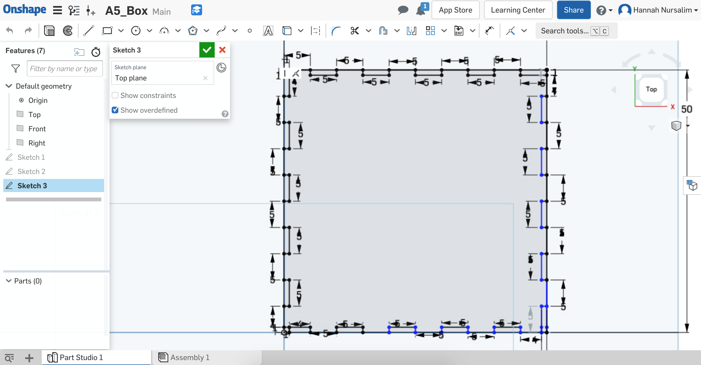
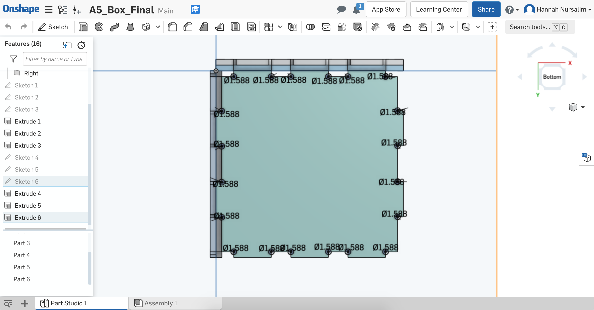

Design
Process
First step was to create the sides of the box on OnShape. I knew I needed to design 3 sides - 1 for front and back, 1 for left and right, and 1 for top and bottom. Using the dimensions I chose, I created the 3 sides. My strategy was to evenly divide slots onto each side: 5mm male part, 5mm female slot, etc. I started with front side. Once that was complete, I started a new sketch for the left/right side/face.
OnShape sketch of front face of box

OnShape sketch of left and top face of box
Now that I had the extrusions for each side, I assembled the pieces together on OnShape to see if my design worked. Sadly the slots didn't match up once I added the copies for each side that I made. This frustrated me as I had already spent a few hours creating the sides of the box. I chose to go back to the drawing board and start from scratch.
Failed assembly. Male fingerjoints sit on top of each other.
I still wanted to use the same dimensions of 50mmx50mmx50mm, but I needed to redo the # of slots and actually do math. To do this, I used paper and pencil to sketch out an edge of the front face and what the slots would like. I then used the same measurements and slot numbers for the remaining edges of the front face. After I finished the front face, I moved on to the left face.
Front face sketch iteration
Left face sketch iteration
Top face sketch iteration
Extruded sides of the box
When I asked Joshua questions about the milling machine, he mentioned how the machines aren't as precise because of the shape of the tools. Unlike a laser cutter, milling has an inside corner problem where it has trouble getting all the way to an inside angle because of the tool shape. He suggested adding dogbones to the corner of the female slots and to make the diameter 1/32in in order to use the 1/32 flat end mill tool. I made new sketches using the extruded sides. On each of these new sketches I added dogbone circles with a diameter of 1/32 to the corner of female slots. Once all sides had dogbones, I extruded these new sketches. I then went into Assembly to see what the box would look like with dogbones.
Preview of box with dogbones
With the newly extruded sides that include the dogbones, I exported each side into a DXF file. I used the slide deck for reference on what to do on Kicad to get a Gerber file then BamTam to mill. On Kicad, I created a new PCB project for each file. On each corresponding PCB project, I imported the DXF file, set the origin, then exported into a Gerber file.

Kicad DXF import & Gerber export
When imported, message saying a smaller tool than 1/32in needed
I actually used tool sizes on BanTam to help me decide how I should make the dogbone circles bigger. I figured if a 1/32in flat end mill tool can't fully mill a 1/32in diameter dogbone, I should use the next size up as my diameter. The next sized up tool was a 1/16in flat end mill. I decided to try 1/16in diameter for the dogbones.

Adding dogbones
Extruded sides with dogbones
I followed the slide deck to set up the machine and BanTam settings and was able to set up easily with no problem. I first opened the Gerber file for the front and back sides of the box. I used my calipers to measure the width, height, & thickness of the FR-1 piece and entered the information in the appropriate area on BanTam. I had an extra FR-1 board that I chose to use as my sandwich piece for all the sides I needed to mill. I made my FR-1 sandwich, measured its thickness, then calculated for my Z offset. I entered that into the corresponding area on BanTam. I adjusted where I wanted the mill to start in terms of x & y on the board.
BanTam settings for front and back pieces
Milling process for front and back pieces
Successful first mill!
BanTam settings & mid-process for left and right pieces
Milling in progress
BanTam settings & mid-process for top and bottom pieces
Successful first mill!
Overall, milling went smoothly for me. I was able to use only one tool size, so I didn't have to switch tools during the process. The one slight problem I ran into was my sandwich not being taped strongly to the platform for one of the milling instances. After each piece finished milling, there was a lot of sawdust on the platform. When I was doing the set up process for milling the left/right face of my box, I didn't clear out some of the sawdust on the platform. I taped my sandwich onto the somewhat dusty platform, thinking "Oh it sticks, so it's okay". However, when the milling just started, a few seconds in my sandwich unstuck itself from the platform, and basically swung around in a 180 degree rotation. I hit the emergency power button, rehomed the machine, took the sandwich off the platform, wiped the platform with a paper towel, retaped the sandwich and stuck it to the platform as firmly as possible. Fortunately, this all happened at the very beginning, so I was able to reuse the same FR-1 sandwich. After this incident, I made sure to clear off all sawdust from the platform after each piece, and fortunately didn't run into this issue again. Step 8: Putting the box together
I started assembling my box each time a piece finished milling. This was my way of making sure I did the right calculations and such. Each piece I created was a success! The front and back pieces connected with the left and right pieces. The top and bottom connected to these pieces easily as well. I was happy that my calculations were correct and that the pieces fit together nicely, yay!